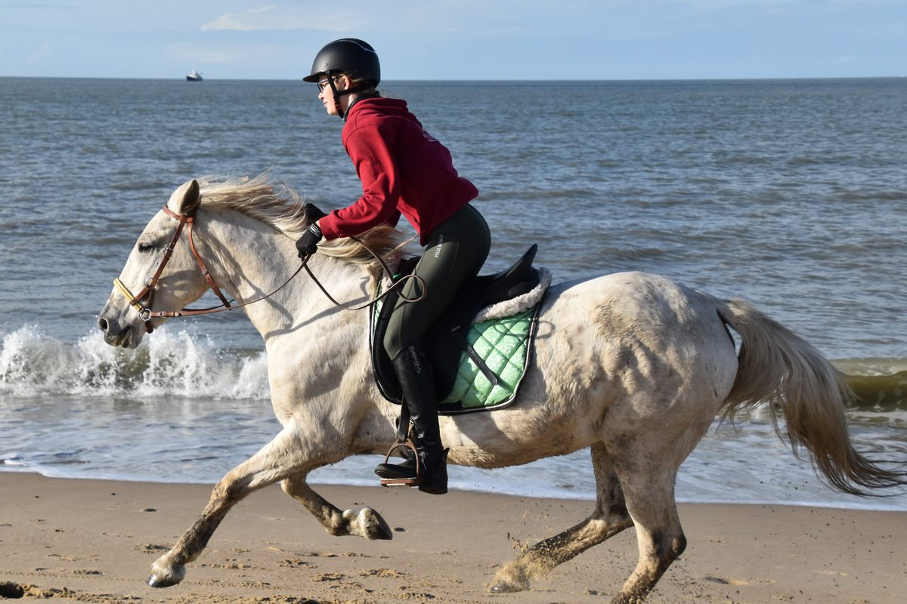
Strandrit
Begeleide rit van ca. 2,5 uur naar het strand van Groede, Nieuwvliet en Breskens. Voor zeer gevorderde ruiters.
v.a. € 85 p.p.Meer info
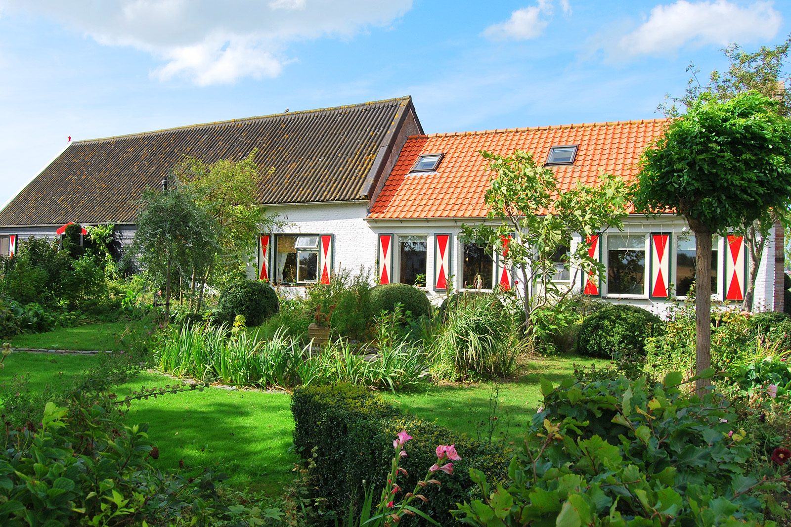
Bed and breakfast tussen de weilanden bij Groede, op 3 km van het strand. In een boerderij uit 1818, met paarden op het erf en een uitgebreid ontbijt.
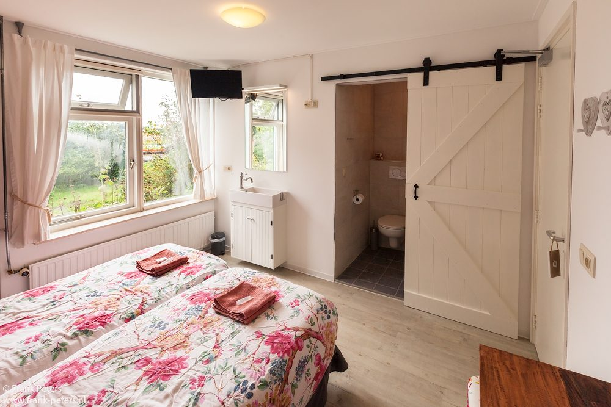
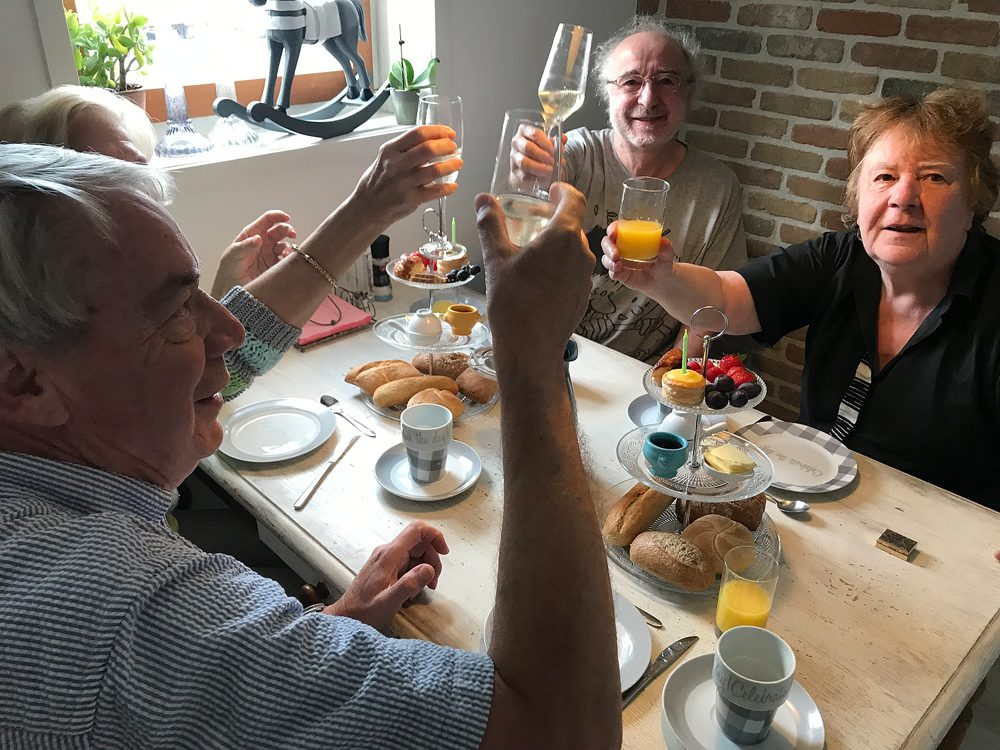
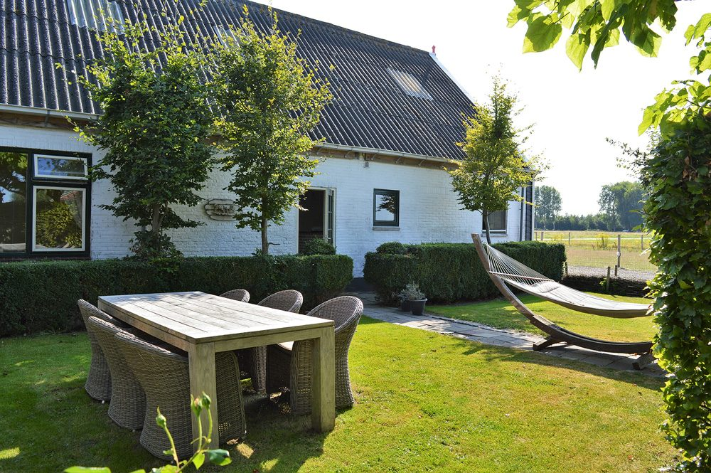
De kamers zitten in de voormalige paarden- en koeienstal van de boerderij, allemaal op de begane grond en met een eigen ingang. Elke kamer heeft een eigen badkamer met douche en toilet.
's Ochtends staat er een uitgebreid ontbijt klaar. Daarna fiets of wandel je zo naar het strand, of je blijft lekker in de tuin.
Antje werkt met paarden. Vanuit de B&B rijd je met haar naar de brede stranden tussen Breskens en Cadzand, of door de polder rond Groede.

Begeleide rit van ca. 2,5 uur naar het strand van Groede, Nieuwvliet en Breskens. Voor zeer gevorderde ruiters.
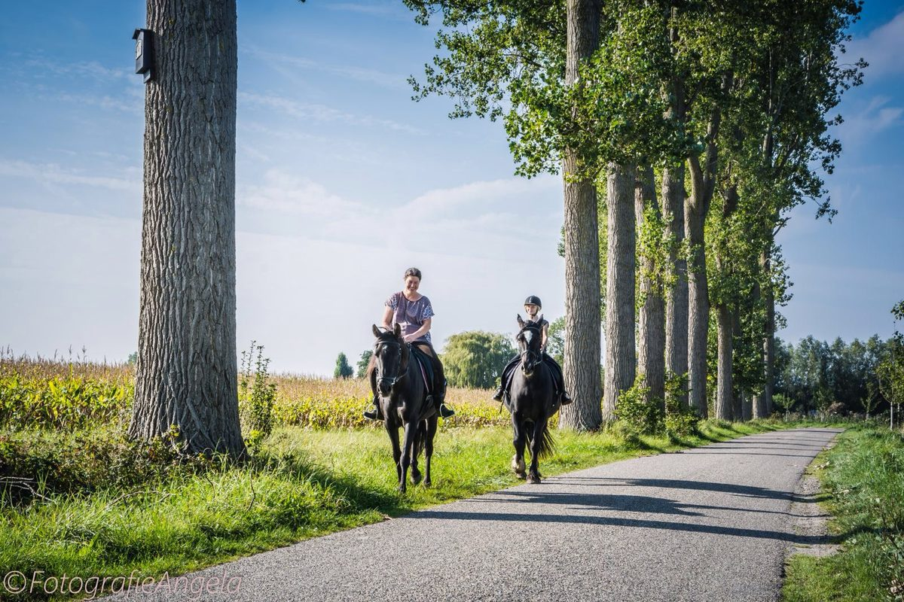
Een uur door het karakteristieke landschap rond Groede. Ook voor iets minder ervaren ruiters.
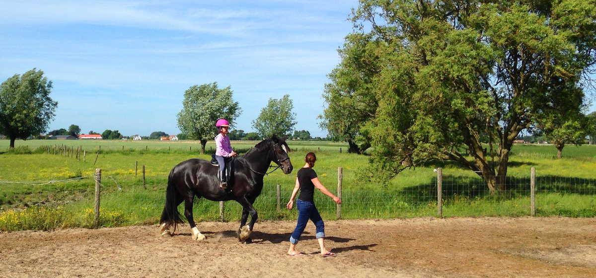
Zelf poetsen, opzadelen en een wandeling aan de hand door de polder. Geen ervaring nodig.
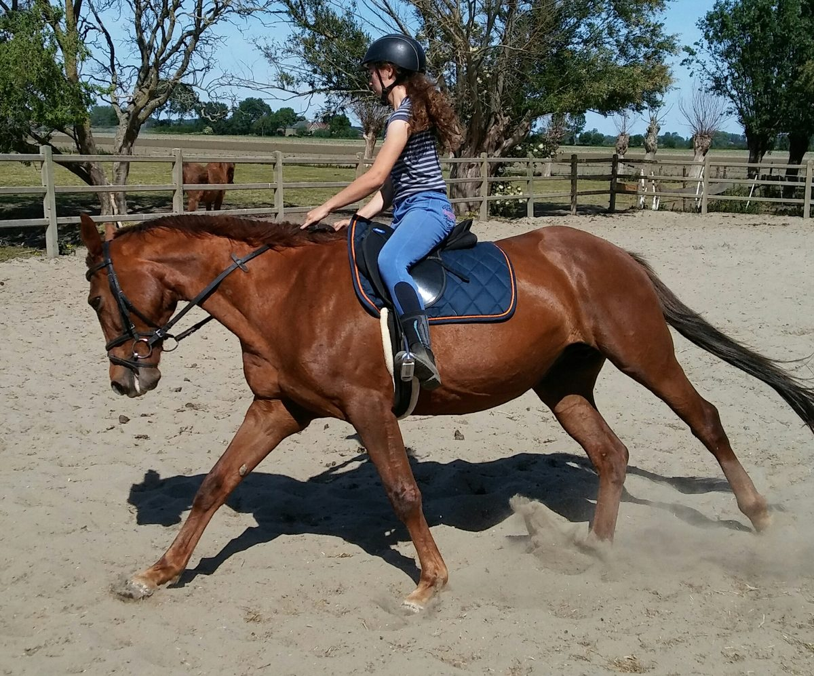
Het plezier van een eigen paard, zonder aanschafkosten. Al vanaf één dag per week.
Het Zoete Pèèrd hoort bij de best beoordeelde logies in de regio.
"Een fijne, schone kamer met heerlijke bedden. Vriendelijke, enthousiaste eigenaren. Zeer uitgebreid ontbijt met fruit uit eigen tuin. Flinke collectie boeken (met info over Zeeuws-Vlaanderen) en mooie tijdschriften."
JosNederland"Die Lage und die Ruhe hat uns super gut gefallen. Wir haben uns super wohl gefühlt. Danke an Antje und Frank wir kommen ganz sicher wieder. Das Frühstück war mit liebe zubereitet, danke dafür."
ReneDeutschland"Great breakfast and coffee, very clean room, lovely horses, very friendly owners. Still we remember our perfect holiday in Zeeuws-Vlaanderen. The horseback riding for the kids was best enjoyment! Thank you very much for all."
JosefCzech RepublicFietsen, wandelen, de kust en leuke dorpen en stadjes. Brugge en Gent liggen op 30 tot 50 minuten rijden.
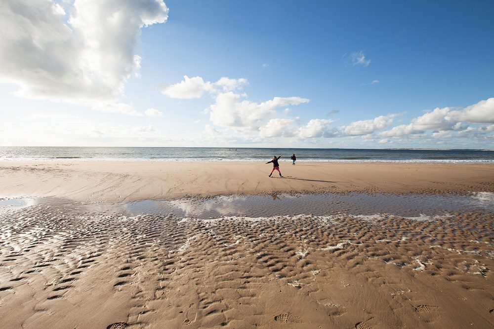
3 km
Brede stranden zonder files, met leuke strandpaviljoens.
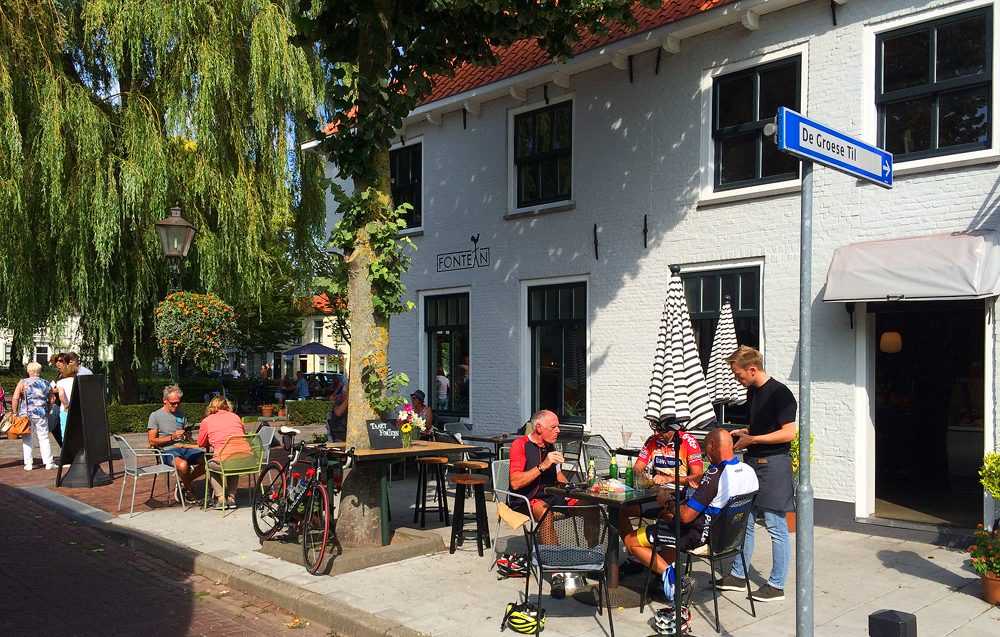
om de hoek
Terrasjes, de Slijkstraat met oude ambachten en elk jaar het Oldtimer Weekend en de Jaarmarkt.
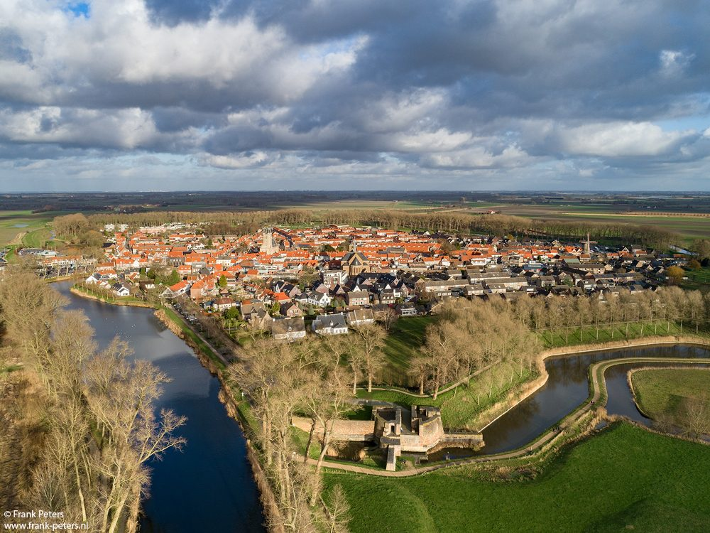
15 minuten
Bourgondisch vestingstadje met Belfort, molen en een mooie wandeling over de stadswallen.
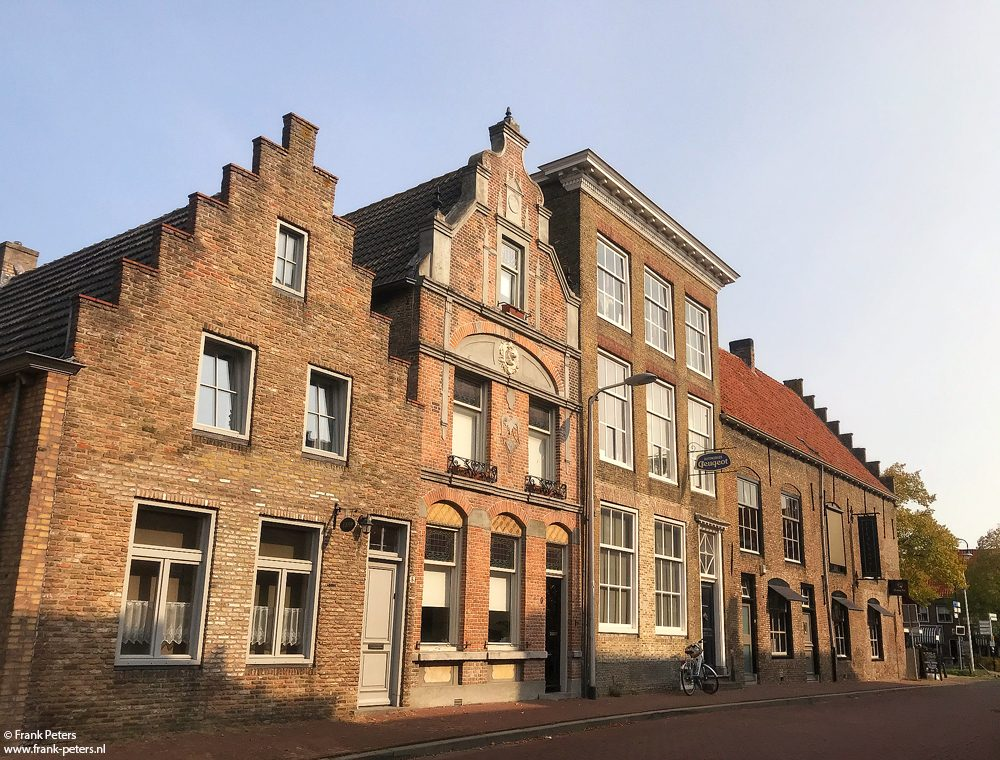
oude kern
Mooi oud centrum met trapgevels en de jaarlijkse folkloristische dag met ringrijden.
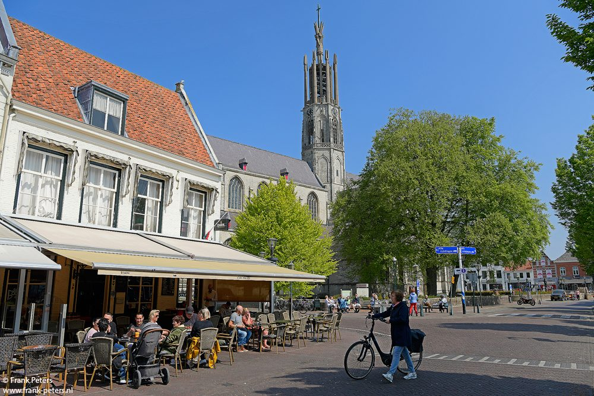
45 minuten
Gezellige vestingstad met de Willibrordusbasiliek en museum Hulst in het 's Landshuis.
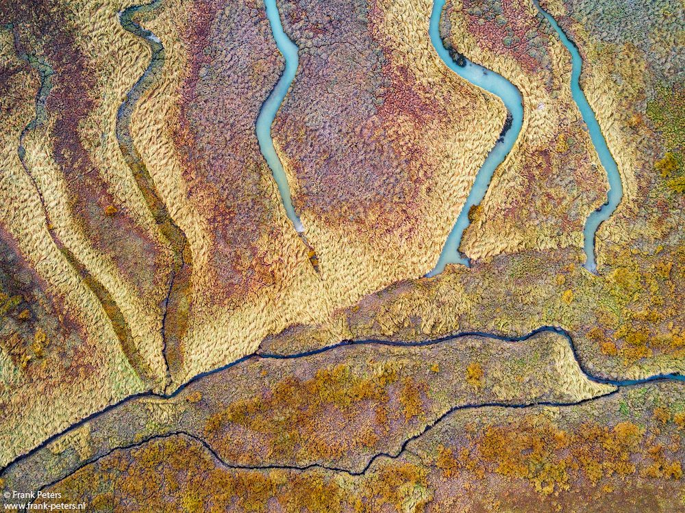
natuur
Getijdennatuur met bijzondere planten en vogels. Zoek naar haaientanden en fossielen.
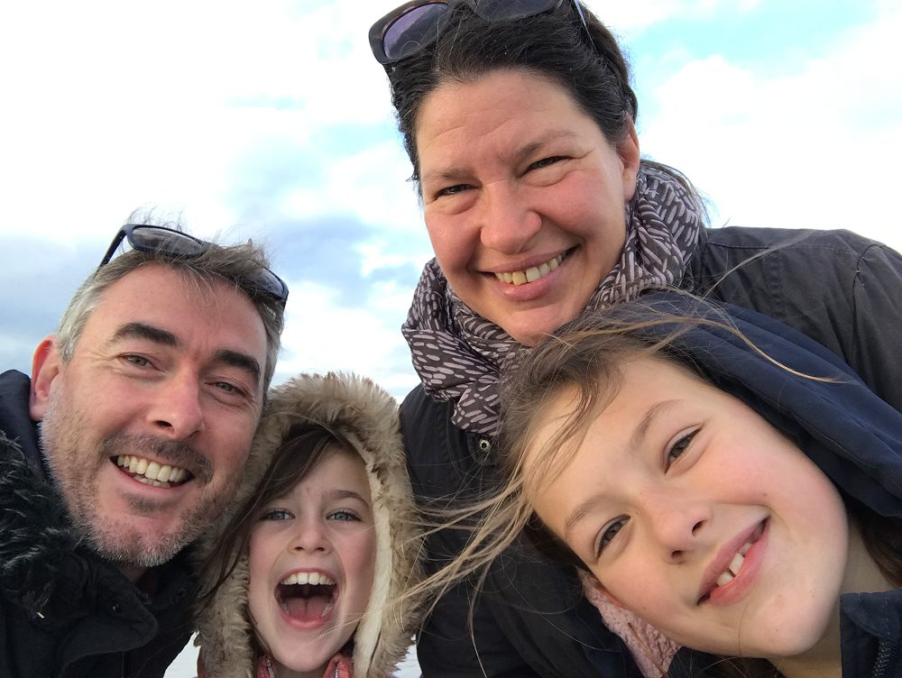
Sinds 2017 runnen wij, Antje en Frank, samen met onze dochters Lisa en Sanne Het Zoete Pèèrd. We komen oorspronkelijk uit Berlijn en Dordrecht en genieten hier elke dag van de rust en ruimte.
Het Zoete Pèèrd was begin jaren negentig de eerste B&B van Zeeuws-Vlaanderen. Wij hebben de oude stal in 2017 helemaal gestript en opnieuw opgebouwd. Naast de B&B werkt Antje met paarden en is Frank landschapsfotograaf: hij won onder meer de International Photography Awards en kent de mooiste fotolocaties van Zeeland.
Geef je data door, dan laat Antje je zo snel mogelijk weten of er plek is. Ook voor een strandrit of een vraag kun je hier terecht.
We zijn bereikbaar via WhatsApp en e-mail.
Inchecken 15.30 - 18.00 uur
Uitchecken tot 11.00 uur
Later inchecken? Laat het ons even weten.